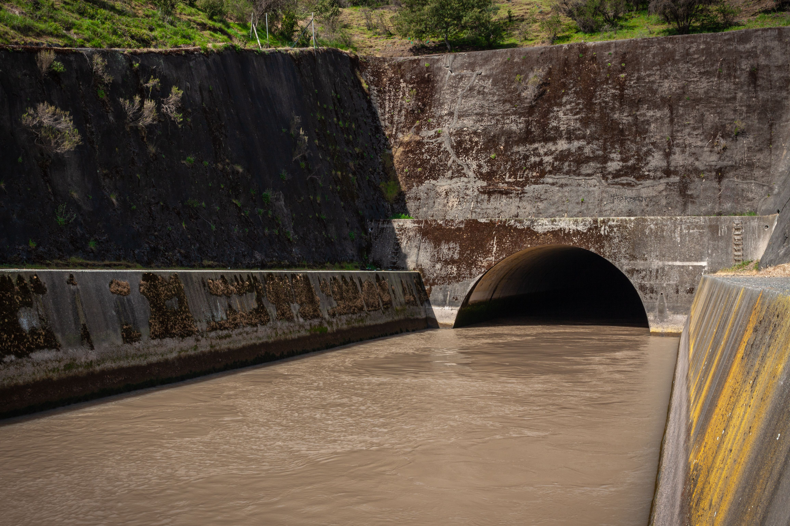

El camino por el drenaje
Después de bañarnos, lavar los platos o usar el sanitario, el agua ya no está limpia. Puede contener jabón, grasa, restos de comida, papel y otros residuos. A esta agua se le llama agua residual.
El drenaje es una red de tuberías que recoge el agua residual y la transporta. En muchas ciudades, esas tuberías llevan el agua hasta una planta de tratamiento.